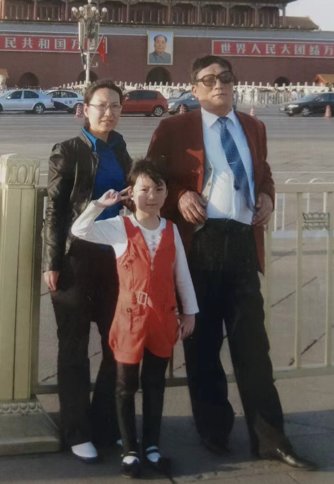
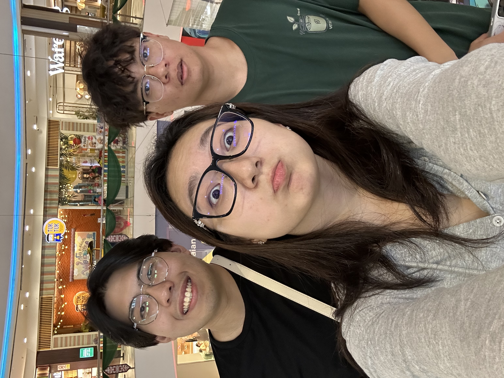
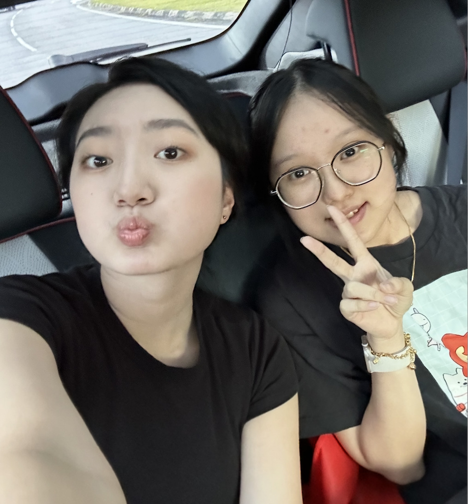
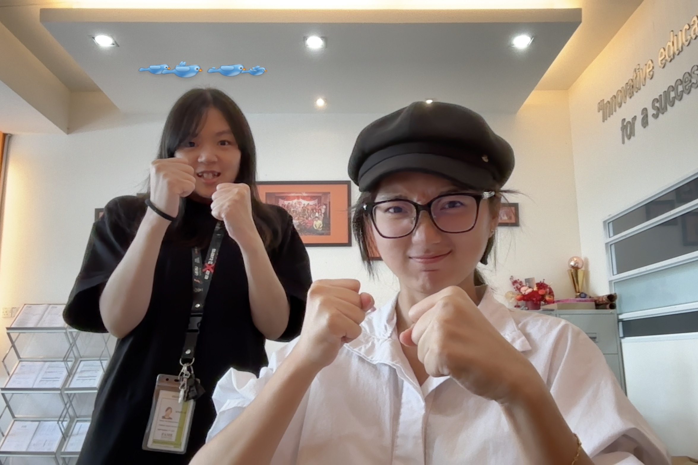

Family ties

My father passed away when I was very young, and since then, my mother has raised me on her own. She is a strong and independent woman. My relationship with my mother is more like that of close friends who aren’t afraid to argue. We both have strong personalities and often clash, but we always reconcile quickly. We are not just mother and daughter—we are companions. She supports my decisions and ideas, and at times gives me pressure too. Still, we remain each other’s closest and most reliable support.
我小时候父亲便去世了，从那之后，妈妈独自一人把我带大。她是一个坚强而有主见的女人。我和妈妈的关系更像是一对“可以吵架的朋友”。我们都很倔强，常常会因为意见不合而发脾气，但很快又会和好如初。我们既是母女，也是朋友。她会支持我的决定和想法，有时候也会给我一些压力。尽管如此，我们始终是彼此最亲密、最坚定的依靠
Friendship

I’ve known Ng Peirong since junior high school—it’s been eight years now. He is, without a doubt, my truest and best friend. He can always sense what I’m thinking, even before I speak. No matter what I go through, he understands me completely and supports me without hesitation. To me, he’s not just the best friend in the world—he’s the best in the entire universe. He feels more like family without blood ties. Though he’s younger than me, he has an amazing ability to care for my emotions with gentleness and insight. When I’m down or exhausted, he always stays by my side. We often meet up and sometimes go to the beach together—walking, talking, feeling the breeze, or watching the sunset. Being with him gives me a deep sense of security. I don’t have to force a smile, don’t have to pretend, and even silence feels comforting. His presence alone brings me peace.
我从初中起就认识了 Ng Peirong，到现在已经整整八年了。他是我真正意义上最好的朋友。他几乎总能猜中我心里的想法，甚至在我还没开口之前。无论我经历什么，他都能毫无保留地理解我、支持我。对我来说，他不仅是全世界，甚至是整个宇宙里最棒的朋友。 他更像是我没有血缘的家人。虽然他比我年纪小，却总能细腻地照顾我的情绪。在我难过或疲惫的时候，他总能陪在我身边。我们经常一起见面，有时会一起去海边走走，吹风、聊天、看日落。和他在一起的时候，我会有一种很强的安全感——不用刻意说话，不用伪装，哪怕沉默也很舒服。他的存在本身，就是一种让我安心的温柔。

Lim Zhonghua has been a special and important friend to me since junior high. I often jokingly call him “Young Master” because of his gentle temper, easygoing nature, and polite manners. He’s incredibly helpful—almost like a human robot, in the best way. Being around him is always relaxing; even when we’re silent, it never feels awkward. He’s the kind of person who may not talk much, but his presence alone makes you feel calm and safe. But—let’s talk about food, because that’s where the real fun begins. Every single time, he says, “Anything is fine” or “I’m okay with whatever.” Sounds like a dream meal buddy, right? Wrong. The moment we start ordering, he turns into the pickiest eater ever. “Not this,” “Not that”—he rejects more things than I dislike people! .
Lim Zhonghua 是我初中认识的朋友，对我来说一直是个特别重要的人。我常常开玩笑地叫他“少爷”，因为他脾气好、性格温和、待人礼貌，乐于助人得像个“真人机器人”——完全贴心服务型人格。在他身边总是让人感到轻松自在，就算不说话也不会尴尬，他就是那种不多话，但自带安全感的人。 不过说到“吃饭”，我真的有一箩筐话想吐槽他。他每次都说：“随便”“都可以”，听起来是不是很好带饭？错！到了真正点餐的时候，比谁都挑剔：这个不吃，那个也不要。他不要的东西，比我讨厌的人还多！真的让人一秒破防。

Bong Chingyou was a close friend I met during high school. We quickly formed a deep and meaningful friendship. We often went to the beach to watch the sunrise and sunset together, enjoying the breeze, relaxing, taking photos, and immersing ourselves in our little world. We also loved food, getting manicures, playing mahjong, and sometimes sipping drinks while chatting—from everyday talk to dreaming about the future. I truly cherish every moment we spent together—those moments of laughter, silence, and late-night conversations were the brightest light in my youth.
Bong Chingyou 是我在高中时期认识的一位亲密朋友。我们很快就建立起了一段深厚而有意义的友谊。我们常常一起去海边看日出和日落，吹风、放空、拍照，享受属于我们的小世界。我们也热爱美食，做美甲、打麻将，有时候则是一边小酌一边聊天，从日常的琐碎聊到对未来的畅想、对梦想的执着。 我非常珍惜我们共同度过的每一刻，那些笑声、安静、深夜谈心的瞬间，都是我青春里最亮的一束光。
Shiangshiang is a very sweet and lovely girl whom I’ve only recently gotten to know. She is thoughtful, gentle, and enjoys playing badminton—although I haven’t had the chance to play with her yet, I can sense her passion just by the way she talks about it. She’s about five or six years older than me, but she never makes me feel the age gap. In fact, I feel completely relaxed and at ease around her. Talking to her is always enjoyable—she listens attentively and openly shares her thoughts and feelings. She can be a little sensitive at times, but that sensitivity only makes her more genuine and endearing. I truly cherish every moment we spend talking; each conversation feels like a soft and comforting presence.
Shiangshiang 是一个非常可爱的女孩子，是我最近才认识的朋友。她心思细腻，性格温柔，喜欢打羽毛球——虽然我还没有和她一起打过，但从她谈起羽毛球时那种投入的神情，就能感受到她的热情。她比我年长五六岁，但却完全没有距离感，反而让我觉得很放松自在。和她聊天总是让人开心，她会认真地听，也愿意分享自己内心的想法。虽然她有一点小敏感，但正是这种细腻和真实，让她显得格外可爱。我很珍惜和她的每一次交流，每一次对话都像一场温柔的陪伴。